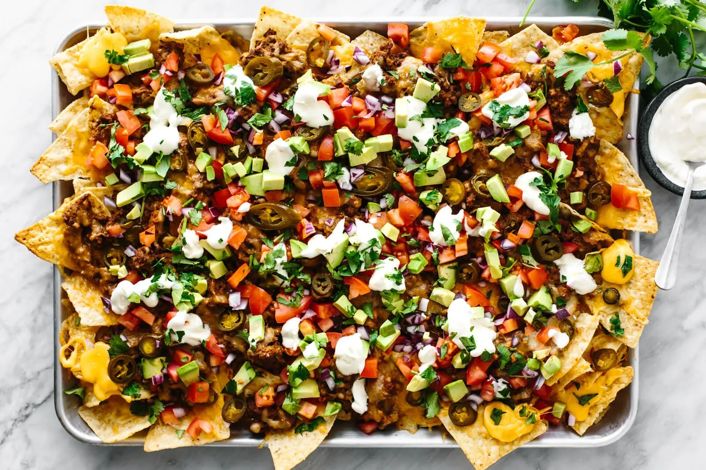

Nachos

A large plate of Nachos! This dish is from mexico, it is absolutely delicious and definately a family favourite!
Ingredients:
- Mince meat (500g)
- Cheese
- Corn Chips
- Coriander
- Spring Onion
- Salsa
- Black Olives
- Mexican taco seasoning
Steps:
- Turn oven on at 190c
- Fry up mince meat
- Add taco seasoning to the mince
- On a large plater lay down chips
- On top of the chips layer the meat and all other ingredeints
- Once all ingredients are spread throughout the chips/dish, place in oven
- Cook for 20 mins
Return Home